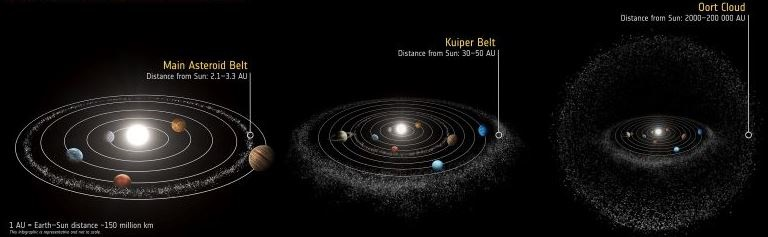
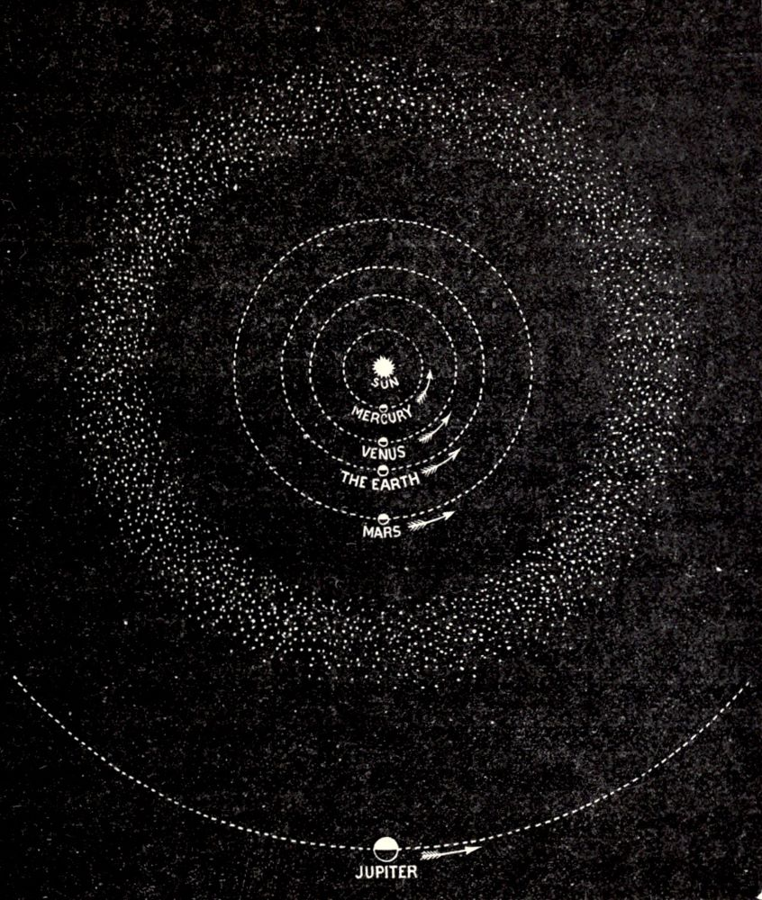
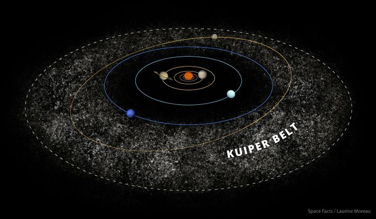

Aszteroida övek
Egy apró koccanás itt, óriási katasztrófa a Földön

A Naprendszerben a bolygókon kívül számos kisebb égitest is található. A legnagyobb számú égitest-populáció a
két különálló övezetbe rendeződött aszteroidák családja. A belső aszteroidaöv a Mars és a Jupiter között, a
külső, ún. Kuiper-öv pedig a Neptunusz pályáján túl helyezkedik el ellipszis alakban keringve a Nap mint
gyújtópont körül. Ezekben az övekben található öt olyan objektum, amelyek egy 2006-ban bevezetett
égitesttípus ma ismert első tagjai, a törpebolygók. Hat bolygónak és három törpebolygónak természetes
kísérői is vannak, ezeket holdaknak nevezzük. A holdakon kívül az óriásbolygók körül gyűrűk, gyűrűrendszerek
keringenek. A rendszerben vannak szabadon keringő testek is, ezek az üstökösök, a kentaurok és a mindenütt
jelenlévő bolygóközi por. Ezek zömének keringése merőben eltér a többi testétől: vagy elnyújtott
ellipszispályákon, vagy az ekliptikáétól eltérő síkban mozognak. A Naprendszert teljesen betölti a napszél,
a csillagunkból kiinduló folyamatos részecskeáramlás, amely kölcsönhatásba lép az égitestekkel, létrehozva
az űridőjárást.
A napszél egyben ki is jelöli a Naprendszer határait: hatása a heliopauzáig tart,
ahol más
csillagok szeleinek sugárnyomása kiegyenlíti a napszél sugárnyomását. Ezt a határt tekintjük a Naprendszer
határának, bár a rendszer gravitációs határa messzebbre tehető, hisz még a hozzávetőleg egy fényév
távolságig terjedő Oort-felhő is ezen a határon belül van.
Aszteroida öv
A kisbolygóöv vagy aszteroidaöv a Naprendszerben a Mars és a Jupiter pályája közötti, nagy mennyiségű
kisbolygót tartalmazó területe. A Naprendszer bolygói egy síkban keringenek a Nap körül. Ugyanebben a síkban
található a kisbolygóöv is. A csillagászok feltételezése szerint a bolygók a csillagok kialakulásával együtt
jönnek létre. A frissen kialakult csillag körüli protoplanetáris korongban még nagy mennyiségű anyag kering,
melyek ütközéseik közben összetapadhatnak, vagy ütközve felaprózódhatnak. Ezek ugyanolyan irányban, egy
síkban keringenek a csillag körül, belőlük előbb-utóbb nagyobb objektumok is létrejönnek, melyek még jobban
vonzzák a többi anyagot.
A kellően nagyra növő objektumok aztán a pályájuk környezetében szinte
minden más
objektummal előbb-utóbb ütköznek, amelynek eredménye az, hogy az égitest kisöpri a pályáját. Így keletkeznek
általában a bolygók. Ez a folyamat különböző ideig zajlik, nagyobb kozmikus karambolok hatására a létrejövő
objektumok darabjai akár újra szét is szóródhatnak. Az is előfordulhat azonban, hogy egy sávban nagyon
hosszú ideig nem képes egyik objektum sem kisöpörni a teljes pályát, például egy szomszédos pályán keringő,
nagyon nagy tömegű objektum zavaró hatása miatt. Feltételezések szerint a kisbolygóöv is egy ilyen, nem
kitakarított bolygópálya, melyet a Jupiter zavaró hatása gátolt meg a bolygóvá válásban.
Ma a
kisbolygóöv
külső és belső határát két kisbolygó-családdal szokták megadni. A belső tartományi zóna a Hungaria-típusú
kisbolygók zónája, míg a külső zónának a Trójai kisbolygók számítanak. Az előbbiek 1,9 CsE, az utóbbiak 5,0
CsE távolságban keringenek. A Trójaiak többsége a Nap-Jupiter rendszer L4 és L5 Lagrange-pontjai
környezetében végzik pályamozgásukat.
A kisbolygóöv legnagyobb égitestje a Ceres, mely, mivel
jellemző rá a
hidrosztatikai egyensúly, azaz saját gravitációja hatására gömb alakot vett fel, törpebolygó. Az övezet
teljes tömegének mintegy negyedét tartalmazza. Kellően hosszú idő alatt belőle alakulhatna ki egy újabb
bolygó a Naprendszerben. Rajta kívül azonban több millió különböző méretű kisbolygó, szikla, kő, porszemcse,
vagy elemi részecske (összefoglaló néven meteoroid) alkotja a kisbolygóövet. Összességében a méretük pár
métertől akár pár száz kilométerig terjedhet. A kisbolygóöv csillagászatilag sűrűn tartalmaz keringő
égitesteket, de földi mértékkel nézve igen is „szellős”. Ha egy ilyen égitesten élhetne egy ember, akkor egy
egész életet kéne várni, hogy megpillantson más kisbolygót.
Kuiper öv
A Kuiper-öv a Neptunusz pályáján kívül található kisbolygóöv, melyet Gerard Kuiper csillagász tiszteletére
nevezték el. Az első csillagászok, akik felvetették az öv létezését, Frederick C. Leonard (1930-ban) és
Kenneth E. Edgeworth (1943-ban) voltak.
A Kuiper-öv a Naptól számított 30-50 csillagászati egység
(CSE)
között helyezkedik el. Jelenleg kb. 800 objektuma ismert, túlnyomó részüket 1992 után fedezték fel, amikor
számítógépes üstökös szimulációk alátámasztották egy ilyen öv létezését. A Kuiper-övben keringő összes
égitest számát meg lehet becsülni a távoli csillagok előtt elhaladó, okkultációt (csillagfedést) okozó
objektumok számából, de az ezt figyelő Taiwanese-American Occultation Survey (TAOS) 2008 folyamán egyetlen
okkultációt sem tudott megfigyelni, azaz itt az eredetileg vártnál kevesebb objektum lehet (évi mintegy
10-4000 fedésre számítottak). Kuiper-szirtnek nevezik azt a jelenséget, hogy a naptól 48 CSE távolságban az
objektumok száma hirtelen lecsökken. Ezt egy eddig még ismeretlen kisbolygó is okozhatja. A Kuiper-öv külső
szélénél nyújtott ellipszis pályán keringő objektumokat a szórt korongba szokás sorolni.
Oort felhő

Az Oort-felhő a Naprendszer legkülső tartományában, a Naptól mintegy 2000–200 000 csillagászati egységnyi
távolságok között található feltételezett üstököszóna, amelyben milliárdnyi üstökösmag kering. Ha valamilyen
külső hatás (például egy szomszédos csillag közelsége) megzavarja az Oort-felhőt, akkor egyes üstökösök
megszökhetnek, mások pedig olyan pályára térhetnek, amelyen a Nap közelébe érve, a felmelegedés
következtében gázburkot (kómát) bocsátanak ki, melyből csóva is keletkezhet. Az üstökös ilyenkor válik
igazán látványossá.
A Naprendszer keletkezésekor a bolygókká alakuló protoplanetáris korong
anyagának
maradékából alakultak ki az Oort-felhőt alkotó üstökösmagok, de a keletkező Nap körüli nyílthalmaz közelben
elhaladó többi csillagával kölcsönhatást folytatott a felhő, a benne keringő égitestek egy része más
csillagok körül alakult ki. Az Oort-felhő elhelyezkedése, a távolságot logaritmikus skálán feltüntetve
A Kuiper-öv és a szórt korong, a másik két Neptunuszon túli objektumcsoport kevesebb mint egy ezredrészére
van az Oort-felhő távolságának. Az Oort-felhő külső kiterjedése meghatározza Naprendszerünk gravitációs
határát.
Az Oort-felhő két különálló régióra bontható: egy gömb alakú külső Oort-felhő és egy korong
alakú
belső Oort- vagy Hills-felhő. Az Oort-felhőt felépítő tárgyak javarészt víz-, ammónia- és metánjégből
állnak. A csillagászok úgy vélik, hogy az Oort-felhőt felépítő anyagok a Naphoz közel alakultak ki, majd az
óriásbolygók gravitációs hatására szétszóródtak a Naprendszer fejlődésének korai szakaszában. Bár nincsenek
célzott megfigyelések az Oort-felhővel kapcsolatban, a csillagászok úgy vélik, hogy ez a forrása az összes
hosszú periódusú és a Halley-típusú üstökösnek, melyek a Naprendszerbe lépnek, és sok Kentaur- és
Jupiter-családú üstökösnek is.
A külső Oort-felhő csak lazán kötődik a Naprendszerhez, és így
könnyen fejti
ki rá hatását az elhaladó csillagok gravitációs vonzása és a Tejútrendszer maga is. Ezek az erők esetenként
elmozdíthatják az üstökösöket a felhőben lévő pályájukról, és a belső Naprendszer felé küldhetik. Pályájuk
alapján a legtöbb rövid periódusú üstökös a szórt korongról érkezik, de néhány az Oort-felhőből
eredeztethető. Bár a Kuiper-öv és a távolabbi szórt korong megfigyelt és feltérképezett, csak négy jelenleg
ismert Neptunuszon túli objektum – a 90377 Sedna, a 2000 CR105, a 2006 SQ372 és a 2008 KV42 – tekinthető a
belső Oort-felhő lehetséges tagjának.